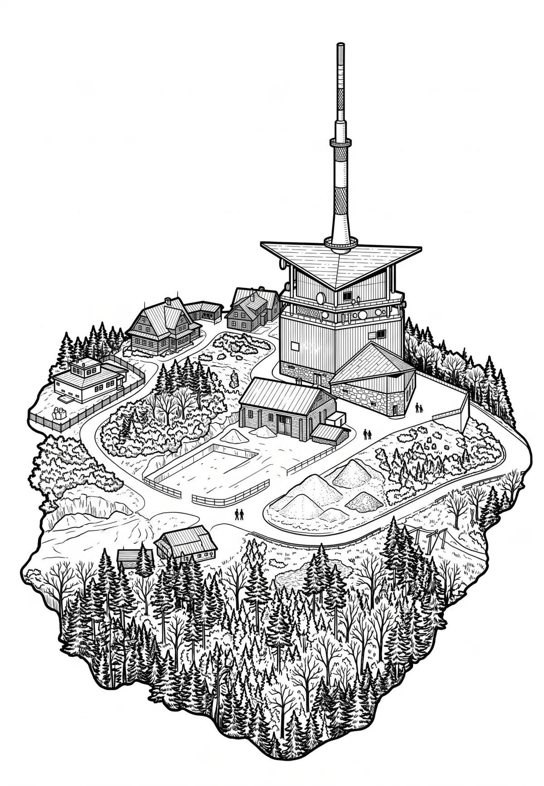

Lysá hora
Moravskoslezský kraj · 1324 m n. m.

přírodní památka · #040
Lysá hora (německy Kahlberg; 1324 m n. m., dříve udávána výška 1323 m n. m.) je nejvyšší hora Moravskoslezských Beskyd a Těšínska. Leží na rozhraní obcí Krásná, Malenovice, Ostravice a Staré Hamry.